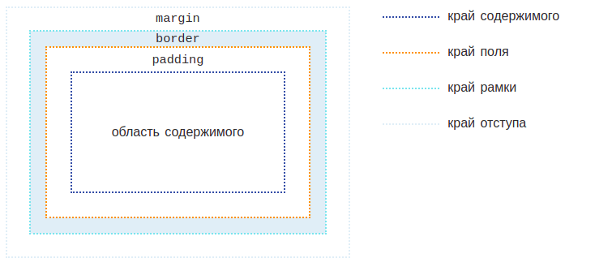
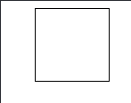
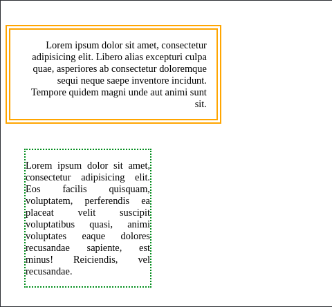
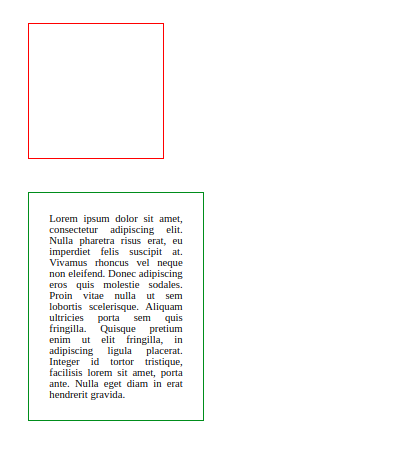
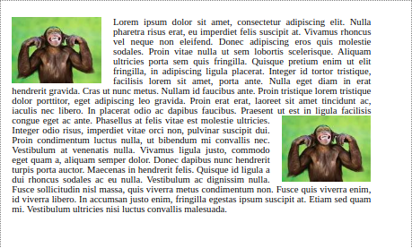

Каждый блок имеет область содержимого, в которой находится текст, дочерние элементы, изображение и т.п., и необязательные окружающие ее margin, border и padding. Размер каждой области определяется соответствующими свойствами и может быть нулевым, или, в случае margin, отрицательным.
У многих тегов в HTML изначально уже заданы margin и padding и для того чтобы обнулить их у всех тегов применяется следующий селектор в самой верхней части CSS документа.
- * {
- margin: 0;
- padding: 0;
- }
Свойство margin
Свойство margin задает отступы между блоками.
- margin: значение в px;
Если поставим такое свойство то, внешние отступы будут одинаковы со всех сторон
Свойство margin можно задавать отдельно для каждой стороны, отступы задаются в px margin-left, margin-right, margin-top, margin-bottom
Существует сокращенное свойство margin, оно служит для того чтоб сократить написание, ведь вместо четырех CSS строчек можно будет написать всего одну, что ускорит работу сайта. Выставление значений для отступов идет по часовой стрелке. То есть первое значение будет задавать отступ сверху, второе справа, третье снизу и четвертое слева.
Ниже написаны сокращенное название сторон, для того чтобы вам легче было ориентироваться какое значение где создает отступ. Во время практической работы с margin, вместо букв нужно будет писать конкретное число.
t – top - верх
r – right - право
b – bottom - вниз
l – left - лево
Четыре значения:
margin: tpx rpx bpx lpx;Пример:
margin: 10px 20px 30px 40px; - означает, что у нашего блока сверху будет отступ 10px, справа 20px, снизу 30px и слева 40px.
Три значения:
margin: tpx rlpx bpx;
Два значения:
margin: tbpx lrpx;;
Значение auto:
Свойство margin используется не только для задания внешних отступов но и для центрирования блочных элементов, для строчных элементов ипользуется text-align .
Для того чтобы центрировать элемент свойством
margin: tbpx auto;
Если хотим чтобы верхние и нижние отступы отличались можем написать три значения:
margin: 20px auto 15px;
Свойство padding
Выше уже разобрались, что свойство margin создает отступы снаружи. Есть еще одно свойство, очень схожее со свойством margin, разница в том что padding создает отсутпы внутрь блока от границы.
Работает по такому же принципу – есть свойства padding-left, padding-top, padding-right, padding-bottom, которые задают отступ для разных сторон.
Также для свойства padding тоже можно задавать 1, 2, 3, 4 значения точно также как и в margin.
Для свойства padding значения auto не существует.
Пример работы с padding
-
Без спользования padding
 -
С использованием padding: 30px 20px;
Как можете заметить тест отодвинулся от границ блока, сверху сниху на 30px, слева и справа на 20px
Float
Определяет, по какой стороне будет выравниваться элемент, при этом остальные элементы будут обтекать его с других сторон. Когда значение свойства float равно none, элемент выводится на странице как обычно, при этом допускается, что одна строка обтекающего текста может быть на той же линии, что и сам элемент. Свойство float задается для элемента который мы хоти выравнить, если это картинка, то для картинки, если блок, то для блока.
- float: left; //Выравнивает элемент по левому краю, а все остальные элементы, вроде текста, обтекают его по правой стороне.
- float: right; //Выравнивает элемент по правому краю, а все остальные элементы обтекают его по левой стороне.
- float: none; //Обтекание элемента не задаётся.
Чаще всего ствойство float применяют для того чтобы красиво расположить картинку или блок внутри текста. Для элемента которому мы задали свойство float, можно также задавать margin.
-
Без float
 -
С использованием float: right;

Задача 1
Используя margin и padding выполните следующее задание

Задача 2
Используя margin и padding выполните следующее задание

Задача 3
Используя float и padding выполните следующее задание. Картинку применить любую

Задача 4
Используя float и padding выполните следующее задание. Картинку применить любую